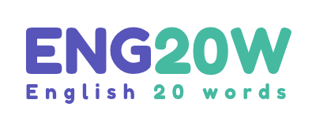

Core Learning Words
A combination of new words and words you have not mastered yet. The system selects up to 20 in total.

Visit Main Website ↗Learn new words from your current and lower English levels, revisit words you have not mastered, and review learned vocabulary at the right time.
Each session is built around up to 20 core learning words, with up to 10 additional words that are due for review.
A combination of new words and words you have not mastered yet. The system selects up to 20 in total.
Review up to 10 mastered words when their scheduled review date arrives.
A session can include up to 20 core learning words plus up to 10 due reviews, depending on the words available.
New vocabulary is selected according to your learning level, while also bringing in useful words from levels you have already passed.
Your current level comes first. The selection aims for approximately two-thirds of new words from your current level and one-third from lower levels.
Available words from lower levels are distributed across those levels. If there are not enough words in one group, the system fills the remaining places from other available levels.
For example, a B1 learner can receive new words from B1, B2? No: the selection includes B1 and the lower levels A2 and A1, not higher levels.
Words you find difficult are not left behind. They return as part of your core learning words until you are ready to master them.
When you choose “I Don't Know”, the word is marked as unmastered and becomes eligible for future learning sessions.
The system gives priority to words that have remained unmastered for longer.
When you know an unmastered word, it enters the spaced repetition review cycle.
After you mark a word as known, ENG20W schedules it for review. Each successful review moves the word to its next interval.
Your first scheduled review after mastering a new or previously unmastered word.
After completing the first review successfully, the next review is scheduled 10 days later.
After the second review, the next review is scheduled one month later. The cycle then starts again with a 5-day interval.
What if you do not remember a word during review? It returns to your unmastered words and can appear again in future core learning sessions.
Each word includes learning support to help you understand it, hear it and use it in practical situations.
Listen to word pronunciation in British and American English.
Understand each word through its meaning and part of speech.
See example sentences that show how words are used in context.
Use relevant images to support understanding and recall.
Learn through five levels, from Beginner (A1) to Advanced (C1).
Follow your learning progress and see how your vocabulary grows.
Learn new words, revisit the ones you find difficult, and review mastered vocabulary over time — one session at a time.
Ibtikary develops practical digital products, platforms and online projects. ENG20W is its English vocabulary learning project, built around focused learning sessions and structured word review.